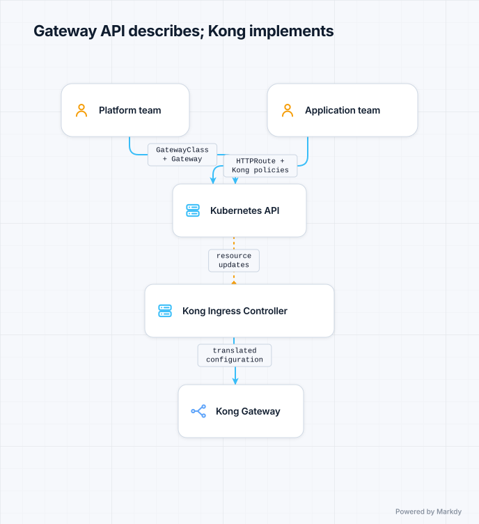
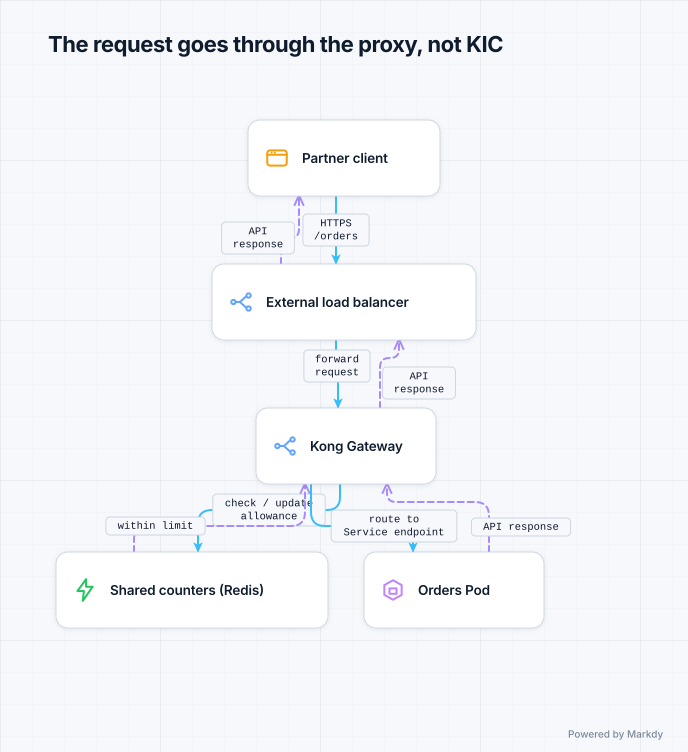

Kong and API gateways
“We already have Gateway API. Why would we need Kong?” Because an API describes the routing you want; an implementation makes it happen. Whether Kong is the right implementation depends on the policies your APIs need and what your team can operate.
By the end you can…
Explain why Services, Ingress, Gateway API and Kong exist, trace configuration separately from requests, and justify a gateway choice for a real workload.Pilot scenario: a shop becomes a partner platform
A fictional team, with realistic requirements. You run a shop on Kubernetes. Customers browse products and submit orders. Later, partners will call the orders API directly. Follow the requirements as they grow: each new tool should earn its place.
Day one: get customers to the shop
Pods come and go, so a Service gives the application a stable address and a way to reach its ready backends. A Service of type LoadBalancer can request an external entry point when your environment provides a load-balancer integration. For one application, that might be enough.
Now you want one HTTPS entry point, with /products and /orders going to different Services. A basic Service does not express these HTTP path rules. Ingress describes host/path routing and TLS configuration, and an Ingress controller configures a proxy or load balancer to carry it out. The object is the instruction; the implementation does the work.
Month three: teams need independent control
Ten teams share the entry point. Platform engineers must own certificates, while application teams need to update routes and send 10% of requests to a new version. Ingress implementations may support this, but advanced routing often needs their own annotations. Gateway API gives these concerns a richer, role-oriented model: GatewayClass selects the implementation, Gateway defines listeners and route attachment boundaries, and HTTPRoute defines application routing.
This is why Kubernetes gained another routing API: not because Ingress could never route traffic, but because shared infrastructure and richer routing needed a better configuration contract. Services still identify application backends. Gateway API CRDs and a compatible implementation must be installed or supplied by your platform.
Month six: partners need identities and quotas
Partners now need API credentials, different request allowances and usage visibility. Routing /orders to the right Service does not, by itself, define a customer subscription or enforce a quota. You need an implementation and policy configuration that can do that. Kong Gateway is one candidate, with plugins and consumer identities. Other implementations can also provide authentication and rate limiting; check the exact features rather than the product category.
Gateway API is not an API gateway product
Think of Gateway API as a standard order form, KIC as the person translating that form into operating instructions, and Kong Gateway as the machinery doing the work. Installing blank forms does not install the machinery. You need an implementation, not necessarily Kong.
Two paths: configuration and customer traffic




KIC watches configuration; it is not an extra hop for each customer request. Kong can route directly to discovered Pod endpoints, so the Service is not necessarily a separate proxy hop. Kong can also be the proxy implementing your Gateway API routes: you do not automatically need an existing gateway proxy followed by a second Kong proxy.
What are you actually choosing?
| Decision | Question to ask | In our shop |
|---|---|---|
| Configuration API | How do teams declare routing and ownership? | Gateway API for shared listeners and team-owned routes. |
| Implementation | What actually routes requests and supports the required features? | Evaluate Kong, Envoy Gateway or an existing platform implementation. |
| API policies | How do we identify consumers, enforce limits and expose usage? | Plugins or extension policies; verify edition, support and operational dependencies. |
| Application authorization | May this customer read this particular order? | The application still enforces business-level access, even if the gateway validates credentials. |
Kong on Kubernetes
Kong has two parts. The data plane is Kong Gateway, built on NGINX/OpenResty, which proxies traffic. The control plane on Kubernetes is the Kong Ingress Controller (KIC), which watches Kubernetes resources and programs the gateway. It speaks Gateway API as well as Ingress, so you write standard routes and add Kong behaviour through its own CRDs.
KongPlugin/KongClusterPlugin— a plugin configuration (rate limiting, auth…).KongConsumer— a caller identity, with credentials attached.KongUpstreamPolicyand friends — load-balancing and health-check tuning.
apiVersion: configuration.konghq.com/v1
kind: KongPlugin
metadata: {name: rate-limit, namespace: prod}
plugin: rate-limiting
config:
minute: 100
policy: local
---
apiVersion: gateway.networking.k8s.io/v1
kind: HTTPRoute
metadata:
name: orders
namespace: prod
annotations:
konghq.com/plugins: rate-limit # attach the plugin to this route
spec:
parentRefs: [{name: kong}]
hostnames: [api.example.com]
rules:
- matches: [{path: {type: PathPrefix, value: /orders}}]
backendRefs: [{name: orders, port: 80}]This fragment assumes a Kong-managed Gateway named kong and an orders Service already exist in prod, along with the required CRDs and controller. It demonstrates attaching a policy, not a full installation.
Important for the partner scenario: policy: local uses each Kong instance's own counters. Three replicas do not automatically share one 100-request allowance. This example also does not configure consumer authentication or paid tiers. For shared per-customer quotas, configure identity, select a supported shared-counter strategy (such as Redis), and test behavior during dependency failure. A simple local rate limit is not a billing-grade quota.
Kong can run without a database ("DB-less"), with KIC translating Kubernetes resources into gateway configuration. Other deployment topologies exist; plugin compatibility and supporting services depend on your chosen topology.
The senior engineer's decision
The engineer does not begin with “Kong has more features.” They ask what the existing gateway cannot do, how precisely quotas must behave, who will operate policy dependencies, and whether the required plugins are available in the intended edition.
- Try the existing implementation first. If its supported policies meet partner authentication, limits and usage requirements, reuse it. Gateway API adoption alone is not a reason to replace it.
- Evaluate Kong if there is a concrete gap. Suppose the team already operates Kong elsewhere and has tested consumer-management and plugin workflows. Reusing that experience can make Kong a sensible choice for the partner edge.
- Prove the behavior. Send requests from two consumers through multiple replicas. Check independent limits, credential revocation, policy updates, latency under load and the agreed behavior if the counter store is unavailable.
- Include migration costs. Test route and TLS parity, capacity, upgrades and rollback. Gateway API makes supported routing configuration more portable; Kong-specific policies still need translation when moving vendors.
A defensible decision for this scenario
“Use Gateway API for routing ownership. Choose Kong for the partner entry point if its tested consumer-policy workflow fills our current gap and fits our operating model. Reuse our existing implementation if it meets the same requirements. For the original shop with only host/path routing, a migration solely to add Kong has no demonstrated benefit.”
When to use a gateway
- You publish APIs to external consumers or partners and need keys, quotas and per-consumer analytics.
- Authentication and rate limiting must be consistent across many services without each team re-implementing them.
- You need to front non-Kubernetes backends too, with one policy layer.
When you do not need a new product: if your existing supported implementation handles your host/path routing and TLS, keep it. Kong can do simple routing too, but replacing a working proxy has a cost. Adding a second proxy creates another request-path dependency.
The alternatives
| Option | Character |
|---|---|
| Envoy Gateway | Gateway API-native Envoy with extension policies for auth, rate limiting and more. |
| Istio ingress gateway | Envoy at the edge, sharing configuration and identity with the mesh. |
| Apache APISIX | Open source gateway with a large plugin set and etcd-backed config. |
| Traefik | Ingress plus middleware chains for auth and rate limiting. |
| Tyk, Gravitee, Ambassador/Emissary | Gateways with different emphases: lifecycle, policy, or developer experience. |
| Managed gateways | Azure API Management, AWS API Gateway, Apigee — hosted, outside the cluster, with their own pricing and limits. |
The hidden cost: the gateway is in every request path
It needs high availability, careful upgrades and capacity planning, and its plugins add latency. A misconfigured plugin ordering or a failing external auth call becomes an outage for every API at once.
✍️ Do it by hand
- Product wants a free tier of 100 requests a minute and a paid tier of 1000, per customer. Ingress or gateway?
- You have three internal web apps and a public marketing site, all needing host routing and TLS. Do you need Kong?
- Where does Kong get its configuration in DB-less mode on Kubernetes?
Show answer
1) A gateway: per-consumer limits need consumer identity and shared counters.
2) You need a routing implementation, but not specifically Kong. Keep an existing supported implementation if it meets the requirements.
3) From Kubernetes resources — Ingress or Gateway API objects and Kong CRDs — translated by the Kong Ingress Controller.
Decision exercise: challenge the proposal
A colleague proposes “install Gateway API, then put Kong behind our existing proxy so the API will work.” What would you clarify before approving it?
Walk through the reasoning
Ask which implementation will reconcile the Gateway resources and which proxy will handle traffic. Gateway API objects do not process requests. Kong could implement the routes itself, so two proxies need an explicit justification. Then ask which missing policy requires Kong, and test whether the existing implementation already supports it.
Sources and next steps
- Gateway API introduction — design goals and the distinction between Gateway API and API gateways.
- Kong Ingress Controller documentation — configuration flow, deployment models and support.
- Kong rate-limiting plugin — counter policies and compatibility.